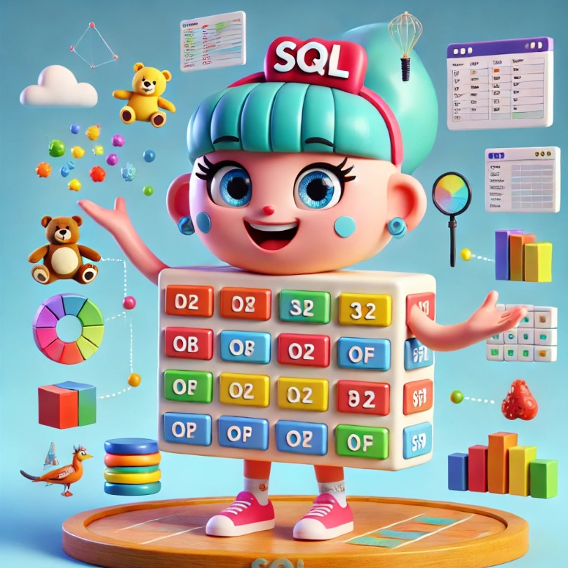

🌟 FUN ACTIVITIES 🌟
SQL Fun Activities for Kids
🚀 SQL SHOW🚀
Design Your Own Database
Goal: Create a fun and personalized database at home.
Steps:
- Use Paper or Craft Supplies:
- Draw a table on paper or use craft materials like colored sticky notes to represent rows and columns.
- Create a database of your favorite items, such as:
- Toys: Teddy Bear, Toy Car, Lego Set.
- Foods: Pizza, Ice Cream, Sandwich.
- Animals: Dog, Cat, Rabbit.
- Use Apps or Tools:
- Try child-friendly apps like Google Sheets or free SQL simulators (with parental supervision).
- Create columns for categories (e.g., "Name," "Type," "Color").
